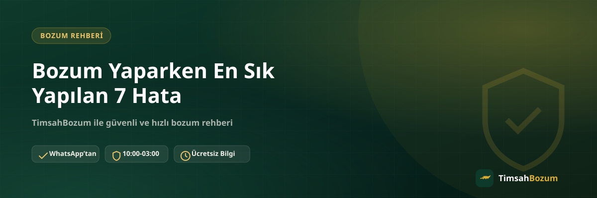

Bozum işlemi kendi başına karmaşık bir süreç değil, ama küçük bir dikkatsizlik işlemi gereksiz yere uzatabiliyor. Kod veya bakiye bilgisini yanlış paylaşmak, oranı teyit etmeden beklemeye geçmek gibi hatalar sonucu değiştirmese de zaman kaybettiriyor. Bu yazıda bozum yaparken en sık karşılaşılan yedi hatayı ve bunlardan nasıl kaçınacağını anlatıyoruz.
Bozum İşleminde Hatalar Neden Önemli?
Bozum süreci WhatsApp üzerinden karşılıklı yazışmayla ilerlediği için, paylaşılan bilginin doğruluğu ve eksiksizliği doğrudan işlemin hızını belirliyor. Yanlış bir adım işlemi iptal etmez ama düzeltme için ek mesajlaşma gerektirir, bu da hem senin hem de karşı taraftaki hattın zamanını alır. Aşağıdaki hataların çoğu, biraz dikkatle baştan önlenebilecek türden.
1. Kullanılmış Kodu Fark Etmeden Paylaşmak
Razer Gold veya iTunes gibi kod tabanlı hizmetlerde en sık yapılan hata, kodun daha önce kullanılıp kullanılmadığını kontrol etmeden paylaşmak. Kullanılmış veya geçersiz bir kod için ödeme yapılamıyor, çünkü kod tek kullanımlık ve tam değeri üzerinden değerlendiriliyor. Özellikle hediye olarak gelen kodlarda bu kontrolü atlamak sık görülen bir durum, bu yüzden paylaşmadan önce kodu bir kez daha gözden geçirmek işini kolaylaştırır.
2. Bakiye Ekran Görüntüsünü Güncel Olmayan Bir Tarihten Göndermek
Pokus, Paycell veya mobil ödeme gibi bakiye tabanlı hizmetlerde, eski veya güncel olmayan bir ekran görüntüsü göndermek işlemi geciktiren yaygın hatalardan biri. Bakiyenin ve tarihin net göründüğü, o anki durumu yansıtan bir görüntü paylaşmak, karşı tarafın tekrar bilgi istemesini önler. Paycell bozdurma gibi bakiye tabanlı işlemlerde bu detay özellikle önemli.
3. Oranı Teyit Etmeden "Bozdurmak İstiyorum" Deyip Beklemek
Sitede yayınlanan oranlar genel bir referans niteliğinde, işlem anındaki güncel oranın WhatsApp üzerinden teyit edilmesi gerekiyor. Sadece "bozum yapıyor musunuz" yazıp yanıt beklemek, sürecin başlamasını geciktiren bir davranış. Güncel oranı sormak hiçbir taahhüt yüklemez, bu yüzden teyit adımını atlamadan ilerlemek en doğrusu.
4. Eksik veya Bulanık Bilgi Paylaşmak
Kod karakterlerinin eksik yazılması ya da bakiye ekran görüntüsünün okunaksız olması, bilginin tekrar istenmesine yol açan bir başka yaygın hata. İlk mesajda hangi hizmeti bozduracağını, kod veya tutar bilgisini ve varsa net bir ekran görüntüsünü eksiksiz paylaşmak, işlemi büyük ölçüde hızlandırıyor.
5. Bilgiyi Doğrulanmamış Bir Numaradan Paylaşmak
Kod veya bakiye bilgisi yalnızca resmi WhatsApp hattından (+90 543 887 21 71) paylaşılmalı. Farklı bir numaradan veya platformdan gelen bir talebe bilgi paylaşmadan önce numarayı doğrulamak, dolandırıcılığa karşı en basit önlem. Bu konuda daha fazla ayrıntıyı WhatsApp dışındaki platformların güvenilirliğini anlatan yazımızda bulabilirsin.
6. SMS Doğrulama Kodu İsteyen Bir Talebe Yanıt Vermek
Bozum işlemi hattına gelen bir SMS doğrulama kodu asla istenmez. Böyle bir talep gelirse işlemi durdurup bilgi paylaşmamak gerekir, çünkü bu kod hesaba veya hatta erişim vermek anlamına gelir ve bozum süreciyle hiçbir ilgisi yoktur. Bu tür bir istekle karşılaşmak dolandırıcılık şüphesi doğurmalı.
7. Çalışma Saatleri Dışında Yanıt Bekleyip Israrla Mesaj Tekrarlamak
TimsahBozum her gün 10:00-03:00 arası aktif. Bu saatler dışında gönderilen bir mesaj kaybolmaz, hat açıldığında sırayla yanıtlanır. Aynı mesajı art arda birkaç kez göndermek sırayı değiştirmiyor, sadece konuşmayı karmaşıklaştırıyor. Gece geç saatte yazdıysan, sabırla yanıtı beklemek en pratik yaklaşım.
Bu Hatalar İşlemi İptal Eder mi?
Hayır, yukarıdaki hataların büyük çoğunluğu işlemi tamamen iptal etmiyor, sadece geciktiriyor. Örneğin eksik bir bilgi paylaştığında, doğru veya eksiksiz halini gönderdiğinde süreç kaldığı yerden devam ediyor. İstisna, kullanılmış bir kod paylaşmak gibi durumlar; bu tür bir kod için zaten ödeme yapılamayacağından yeni ve geçerli bir kod paylaşman gerekiyor.
Kod Tabanlı ve Bakiye Tabanlı Hizmetlerde Hatalar Farklı mı?
Yukarıdaki yedi hatanın bir kısmı yalnızca kod tabanlı hizmetlerde (Razer Gold, iTunes), bir kısmı ise yalnızca bakiye tabanlı hizmetlerde (Pokus, Paycell, mobil ödeme) karşılaşılıyor. Kod tabanlı hizmetlerde en kritik nokta kodun kullanılmamış olması, çünkü kodun tam değeri tek seferde ve tek kullanımlık olarak değerlendiriliyor; kısmi bozum söz konusu değil. Bakiye tabanlı hizmetlerde ise güncel ekran görüntüsü ve bakiyenin doğru okunması öne çıkıyor, çünkü burada bakiyenin tamamı ya da bir kısmı bozdurulabiliyor. Hangi hizmeti kullanacağını bilmek, bu iki hata grubundan hangisine dikkat etmen gerektiğini de netleştiriyor. Bu ayrımı daha ayrıntılı görmek istersen kod tabanlı ve bakiye tabanlı bozum arasındaki farkı anlatan yazımıza göz atabilirsin.
Bu farkı bilmeden işleme başlamak, örneğin bir Razer Gold kodunun "yarısını" bozdurmaya çalışmak gibi baştan mümkün olmayan bir beklentiye girmene yol açabilir. Hangi hizmeti kullandığını netleştirdikten sonra ilgili hata listesine bakmak, gereksiz bir mesajlaşma turunu daha baştan önler.
Bu Hatalardan Nasıl Kaçınırsın?
En pratik yöntem, mesaj göndermeden önce üç şeyi kontrol etmek: hangi hizmeti bozduracağını netleştirmek, kod veya bakiye bilgisinin güncel ve doğru olduğundan emin olmak, ve oranı teyit etmeden işlemi "başlamış" saymamak. Bu üç adımı gözden geçirdikten sonra WhatsApp'tan yazman, yukarıdaki yedi hatanın neredeyse tamamını baştan önler.
İlgili Yazılar
- Bozum İşlemi Yaparken Nelere Dikkat Etmeli
- Bozum Yaparken SMS Doğrulama Kodu İsteyen Kişilere Dikkat
- Bozum Yaparken WhatsApp Dışında Bir Platform Güvenilir mi?
Bu hataları göz önünde bulundurarak işlemine başlamak istersen, kod veya bakiye bilgini hazırlayıp WhatsApp hattımıza yazman yeterli.